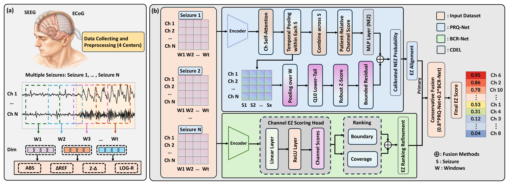
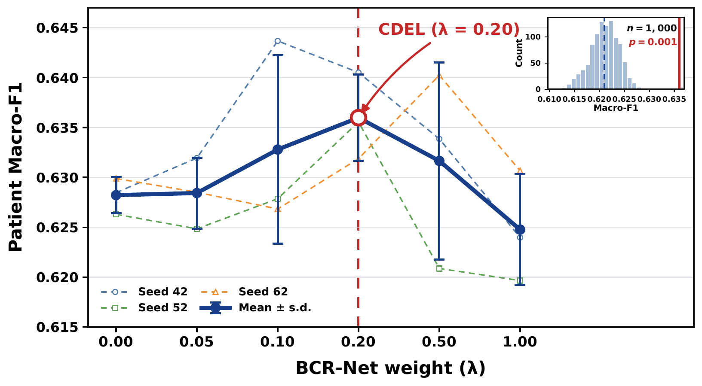

Patient-relative evidence
Absolute descriptors are paired with reference differences, standardized deviations, and log-relative ratios across seizures.
Epilepsy surgery depends on identifying the intracranial EEG channels associated with the epileptogenic zone (EZ). This is difficult because EZ channels are rare, recording conditions vary across centers, and electrophysiological abnormalities are patient-specific rather than globally comparable. EpiLENS therefore asks a patient-relative question: which channels are abnormal compared with this patient's own reference activity and other implanted channels?
EpiLENS converts multi-seizure recordings into patient-relative evidence and combines two independently trained, complementary views.

Absolute descriptors are paired with reference differences, standardized deviations, and log-relative ratios across seizures.
PRQ-Net models stable patient-relative probabilities; BCR-Net emphasizes hard decision boundaries and patient-level coverage.
CDEL keeps PRQ-Net primary and applies the locked rule 0.8 PRQ-Net + 0.2 BCR-Net, without patient-specific tuning.
The evaluation combines two public and two private localization cohorts. All methods use the same retained intervals, bad-channel exclusions, patient labels, and fixed patient-wise partitions.
| Cohort | Patients | Seizures | Channels | EZ / NEZ |
|---|---|---|---|---|
| HUP | 36 | 117 | 3,667 | 16.8% / 83.2% |
| Multi-site | 15 | 45 | 925 | 17.7% / 82.3% |
| LZU | 21 | 72 | 2,141 | 38.2% / 61.8% |
| Fudan | 8 | 22 | 902 | 16.2% / 83.8% |
| Total | 80 | 256 | 7,635 | 22.8% / 77.2% |
We use fixed patient-wise five-fold outer splits over 80 postoperative seizure-free patients from four centers, totaling 256 seizures and 7,635 implanted channels. Metrics are computed per patient and then macro-averaged; Macro-F1 is the primary endpoint.
| Method | Input | Macro-F1 | EZ-F1 | NEZ-F1 | Accuracy | AUROC | EZ-frac. bias |
|---|---|---|---|---|---|---|---|
| Conventional feature baselines | |||||||
| Logistic Regression | Feature | 0.4910 ± 0.0000 | 0.2740 ± 0.0000 | 0.7080 ± 0.0000 | 0.6690 ± 0.0000 | 0.5930 ± 0.0000 | +0.0713 |
| RBF-SVM | Feature | 0.5020 ± 0.0026 | 0.2830 ± 0.0034 | 0.7210 ± 0.0025 | 0.6800 ± 0.0029 | 0.6080 ± 0.0003 | +0.0557 |
| Random Forest | Feature | 0.4820 ± 0.0128 | 0.3000 ± 0.0166 | 0.6630 ± 0.0313 | 0.6360 ± 0.0164 | 0.5880 ± 0.0023 | +0.1203 |
| LightGBM | Feature | 0.4890 ± 0.0000 | 0.2640 ± 0.0000 | 0.7130 ± 0.0000 | 0.6670 ± 0.0000 | 0.5940 ± 0.0000 | +0.0420 |
| Neural and patient-relative controls | |||||||
| DeepSets + BCE NeurIPS '17 | Feature | 0.4862 ± 0.0171 | 0.3060 ± 0.0073 | 0.6664 ± 0.0413 | 0.6522 ± 0.0327 | 0.6300 ± 0.0138 | +0.0960 |
| MLP + patient-wise rank Control | Feature | 0.5753 ± 0.0072 | 0.3446 ± 0.0011 | 0.8060 ± 0.0133 | 0.7136 ± 0.0157 | 0.6380 ± 0.0079 | -0.0298 |
| Logistic + patient-wise z-score | Feature | 0.6065 ± 0.0000 | 0.3988 ± 0.0000 | 0.8142 ± 0.0000 | 0.7356 ± 0.0000 | 0.6835 ± 0.0000 | -0.0138 |
| RBF-SVM + patient-wise z-score | Feature | 0.5888 ± 0.0003 | 0.3958 ± 0.0010 | 0.7819 ± 0.0012 | 0.7047 ± 0.0015 | 0.6799 ± 0.0001 | +0.0541 |
| Raw-iEEG neural baselines | |||||||
| SEEGNet CBM '22 | Raw iEEG | 0.4540 ± 0.0100 | 0.0630 ± 0.0180 | 0.8440 ± 0.0050 | 0.7550 ± 0.0060 | 0.6264 ± 0.0122 | -0.2020 |
| TimeConv-CNN arXiv '26 | Raw iEEG | 0.4570 ± 0.0080 | 0.0610 ± 0.0140 | 0.8530 ± 0.0040 | 0.7660 ± 0.0040 | 0.5922 ± 0.0087 | -0.2083 |
| CLAP ICASSP '23 | Raw iEEG | 0.4310 ± 0.0140 | 0.0270 ± 0.0180 | 0.8360 ± 0.0070 | 0.7500 ± 0.0080 | 0.5051 ± 0.0150 | -0.1995 |
| SEEGformer EBioMedicine '26 | Raw iEEG | 0.4202 ± 0.0101 | 0.1187 ± 0.0176 | 0.7216 ± 0.0110 | 0.7056 ± 0.0061 | 0.6208 ± 0.0005 | -0.0261 |
| EpiLENS | |||||||
| PRQ-Net Ours | Feature | 0.6282 ± 0.0018 | 0.4299 ± 0.0035 | 0.8265 ± 0.0001 | 0.7511 ± 0.0003 | 0.7416 ± 0.0007 | -0.0097 |
| BCR-Net Ours | Feature | 0.6248 ± 0.0024 | 0.4303 ± 0.0083 | 0.8192 ± 0.0063 | 0.7443 ± 0.0042 | 0.7392 ± 0.0034 | +0.0040 |
| CDEL Ours | Feature | 0.6371 ± 0.0072 | 0.4485 ± 0.0118 | 0.8256 ± 0.0030 | 0.7526 ± 0.0029 | 0.7468 ± 0.0004 | +0.0034 |
Mean ± standard deviation over three seeds. Metrics are computed independently for each patient and macro-averaged across 80 patients. EZ-frac. bias is predicted minus observed EZ prevalence (0.2283), so values closer to zero are better. Venue tags identify the originating neural architecture or public baseline source; every result shown here is produced under the matched EpiLENS evaluation protocol.
CDEL improves Macro-F1 by 0.0306 over the strongest retained baseline while keeping predicted EZ prevalence close to the clinical annotation.
Within-patient permutation testing rejects generic score smoothing as the explanation for the fusion gain (p = 0.001).
Leave-one-center-out evaluation reaches 0.6163 center-mean Macro-F1, with 0.5773 on the most difficult held-out center.
PRQ-Net supplies stable patient-relative probabilities, while BCR-Net improves the ordering of difficult EZ candidates. The locked CDEL operating point uses 20% BCR-Net evidence.

Removing patient-relative construction causes the largest PRQ-Net Macro-F1 drop.
BCR-Net achieves the strongest EZ-AUPRC / NDCG-EZ, improving difficult-candidate ordering.
The observed CDEL gain is not explained by generic score smoothing.
CDEL improves EZ-F1 on the hardest 10%, 20%, and 30% PRQ-defined channel subsets.
CDEL improves from one to all seizures on the matched 73-patient cohort.
Center-mean / worst-center Macro-F1 across four leave-one-center-out evaluations.
Boundary-only BCR-Net is the strongest standalone BCR objective (Macro-F1 0.6268). Coverage is retained as a prespecified complement for recovering the annotated EZ set; no standalone benefit is claimed for coverage. Patient-level bootstrap intervals for CDEL versus PRQ-Net remain above zero for Macro-F1, EZ-F1, EZ-AUPRC, and NDCG-EZ.
The repository includes PRQ-Net, BCR-Net, locked CDEL evaluation, component and sensitivity analyses, cross-seizure evaluation, leave-one-center-out evaluation, and the strongest reported baseline: logistic regression with label-free patient-wise z-scoring.
View code repository@article{gong2026epilens,
title = {EpiLENS: Patient-Relative Epileptogenic Zone Localization from Multi-Center Intracranial EEG},
author = {Gong, Yuanchu and Yan, Zibo and Lyu, Yibo and Chen, Chen and Chan, Sixian and Wang, Yalin},
journal = {arXiv preprint arXiv:2608.01076},
year = {2026},
doi = {10.48550/arXiv.2608.01076}
}